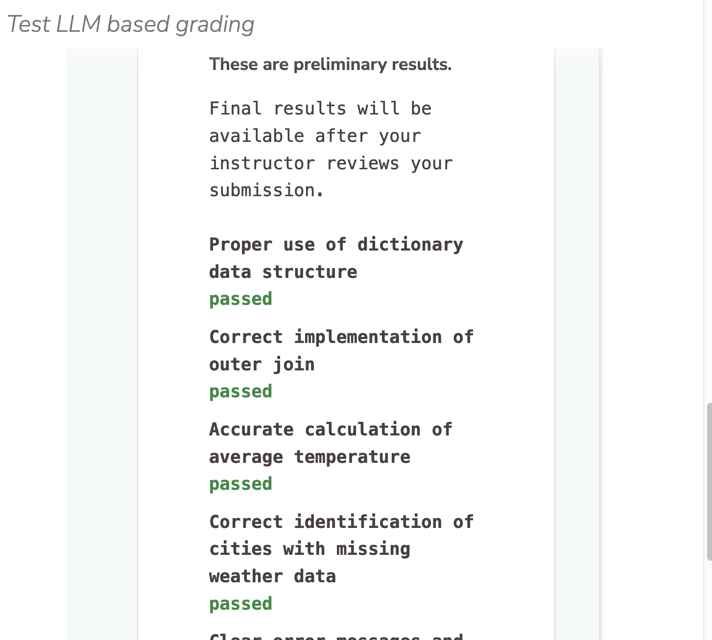

LLM-Based Rubric Grader¶
You can find the LLM Based Rubric assessment in the Manually Graded section of the Assessments tab. More information about adding assessments can be found in our assessment documentation.
There are three steps to this process.
Rubric generation
LLM-based grading using the generated rubric
Manual approval of LLM-generated grades by the instructor
Note
Step 3 is required - LLM feedback will not be released to the student until the instructor reviews and approves it.
LLM-Based Rubric Creation (Step 1)¶
Add an LLM Based Rubric assessment to your guide page and follow the steps below.
On the General page, enter the following information:
Name - Enter a short name that describes the test. This name is displayed in the teacher dashboard so the name should reflect the challenge and thereby be clear when reviewing.
Toggle the Show Name setting to hide the name in the challenge text the student sees.
Instructions - Enter text that is shown to the student using optional Markdown formatting.
Click Grading in the navigation pane and complete the following information:
Add a solution file (1) if you wish the rubric creation process to consider your solution.
Click the Generate Rubrics (2) button to initiate the process.
The Rubric Creation Agent uses the following items to generate the rubric items:
The assessment name
Instructions provided in the General tab of the assessment
Content of the Guide Page where the assessment is being added
Contents of the provided solution file
The Course, Module, and Assignment name
Requirements specified in the Rubric creation tab
Note
If you do not add rubric requirements; the process will use general code grading norms to supply rubric items.
(optional) Add your requirements in the Rubrics Requirements dialog:
Once you are done, click Generate Using AI.
You can provide additional rubric items by clicking Add Rubric and entering information.
Once you have reviewed the rubric items and other settings, click Save to save the assessment.
{kind=link}
{kind=link}
LLM Grading Based on the Created Rubric (Step 2)¶
The LLM Grading agent uses the following to grade the student work:
Instructions provided in the General tab of the assessment
Contents of the Guide page where the assessment is located
Contents of the specified solution file
The student file
The rubric generated in the previous step to identify the grading criteria
Note
The grading occurs when the student clicks the Check It button. The student receives information about whether they have passed or failed each rubric item, but does not see the rest of the LLM-generated feedback until after the instructor conducts their review.
{kind=link}

Manual Approval by Instructor (Step 3)¶
The final step involves the instructor opening the student assignment and selecting the passing test cases as part of the grading process. The instructor can also edit the comments generated by the LLM. Once this process is complete, click on Apply Grade. Once the feedback is released to students, it cannot be modified.
{kind=link}
Rubric Requirements Example¶
Use the following criteria, assigning equal weight to each one.
- Program correctness
- Proper and efficient usage of a dictionary data structure